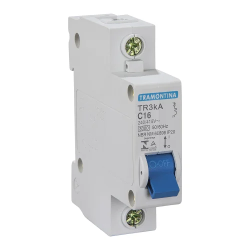
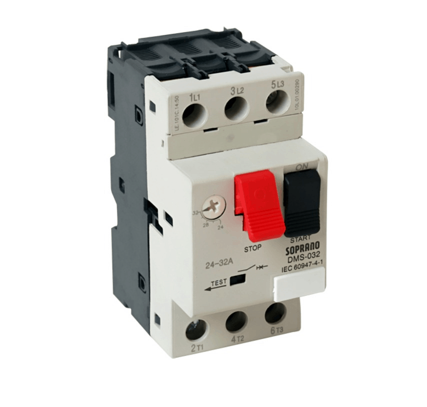
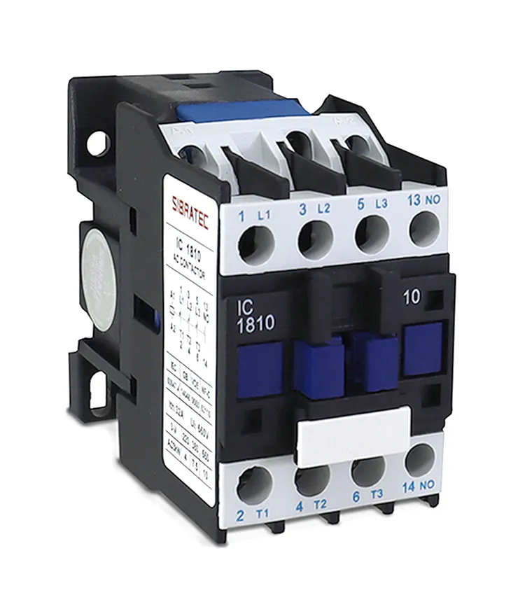
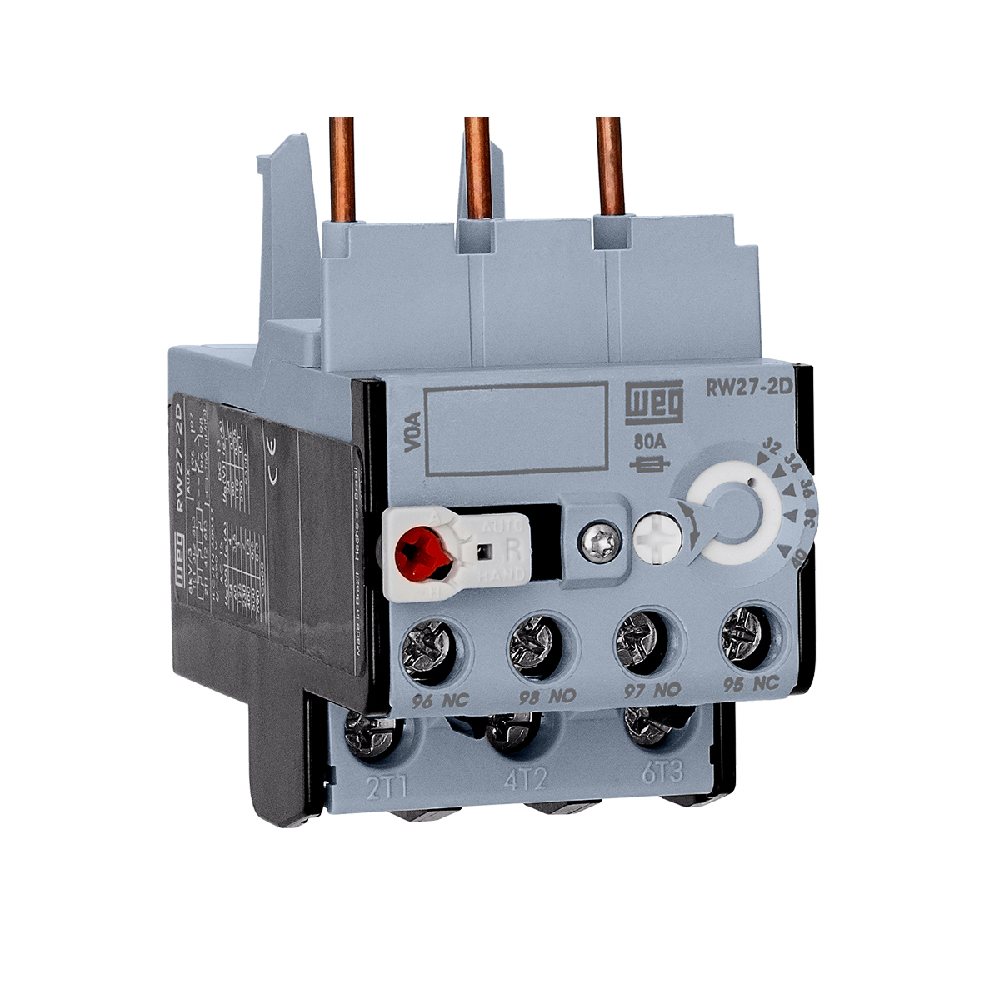
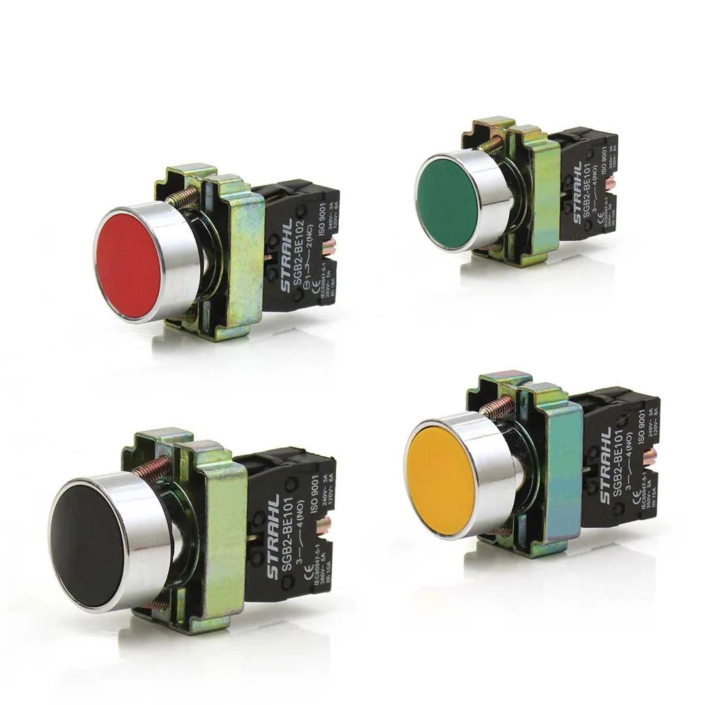
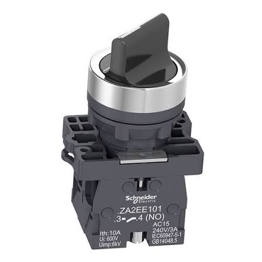
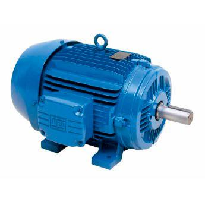

Painel Elétrico
É no painel que ficam os componentes que comandam e protegem o motor.
Painel montado
Fotos da bancada com a partida reversora montada, com os módulos, os cabos e o motor trifásico ao lado. Toque numa foto para ampliar.
Componentes
Disjuntor

→ Conceito: dispositivo de proteção que desliga sozinho quando a corrente passa do limite seguro. Diferente do fusível, que queima e precisa ser trocado, o disjuntor só precisa ser religado.
→ Aplicações: evitar incêndios e proteger fios e equipamentos contra curto-circuito e sobrecarga.
Disjuntor motor

→ Conceito: disjuntor específico para motores. Protege contra sobrecarga, curto-circuito e falta de fase, e é ajustado de acordo com a corrente do motor.
→ Aplicações: proteção de motores trifásicos, bombas d'água e máquinas industriais.
Contator

→ Conceito: um "interruptor elétrico automático" que liga e desliga cargas grandes com um sinal pequeno. Tem o circuito de comando (a bobina) e o circuito de potência (contatos principais que ligam a carga).
→ Aplicações: motores, bombas, compressores e máquinas industriais.
A bobina cria um campo magnético que puxa os contatos metálicos e fecha o circuito.
Relé térmico

→ Conceito: protege o motor contra sobrecarga usando aquecimento interno. Se o motor puxar corrente demais por muito tempo, o relé aquece e desliga o circuito, mas não instantaneamente: o tempo depende do tamanho do excesso de corrente.
→ Aplicações: normalmente usado junto com contatores e motores trifásicos.
Botoeira (botão de pulso)

→ Conceito: botão que só funciona enquanto está pressionado. Pode ser NA (normal aberto) ou NF (normal fechado).
→ Aplicações: botão START, botão STOP, campainha e outros.
Chave manopla (retenção)

→ Conceito: chave que, depois de girada, permanece na posição. A botoeira volta sozinha, a manopla fica travada.
→ Aplicações: ligar e desligar máquinas, seleção manual/automático.
Motor elétrico trifásico

→ Conceito: motor muito usado na indústria. Usa três fases elétricas para criar um campo magnético girante no estator (a parte fixa), que faz o rotor (a parte que gira) rodar.
→ Aplicações: bombas, ventiladores, tornos e esteiras.
Vantagens: forte, eficiente, resistente e de pouca manutenção.